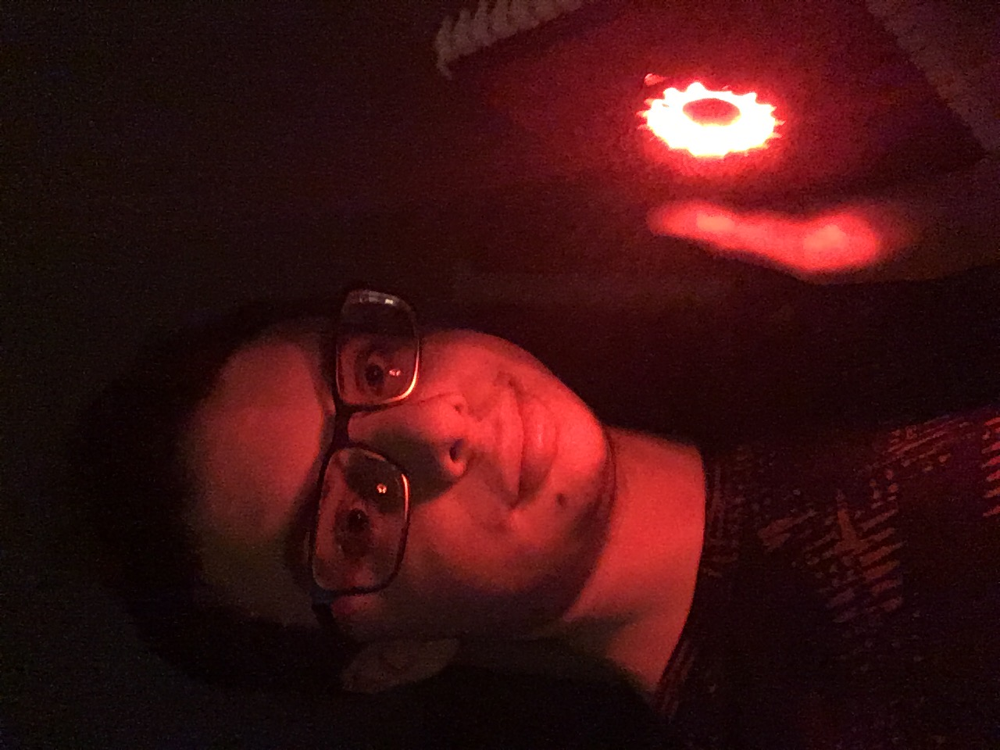
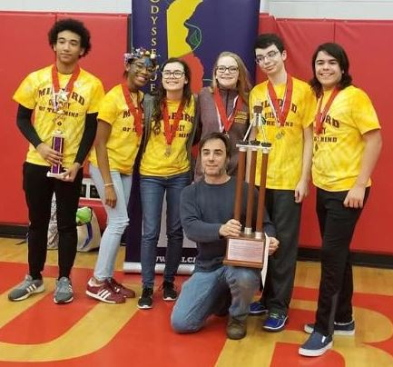

Hi, I'm Fasteroid! Nice to meet you!
I'm a student pursuing a Bachelor's Degree in Computer Science.
My current studies are taking place at
University of Delaware,
but I'll be transferring to
Wilmington University
next semester for much needed quality of life improvements.
I began writing my first original lines of code early to mid 2014, in a little-known language
called Expression 2 from the popular sandbox game
Garry's Mod. E2 had a very steep learning
curve to it at first due to its obscurity and narrow scope of applications, but by 2015 it had turned
into a massive power trip for me and I was hooked. Nowadays I'm severely burned out on the language,
but still plenty capable of assisting others with it.
Due to the experiment-and-observe process of how I taught myself E2, I've gotten really good at
reverse-engineering unfamiliar code and understanding how things work from relatively few examples.

My biggest real life achievements have been those in Odyssey of the Mind, which is a collaborative
problem-solving extracurricular for creative thinkers. Each year, teams of 5-7 choose
one of five long-term problems (which all involve some combination of acting and engineering),
and are assigned an 8-minute 'spontaneous' problem the day of the performance.
With the help of my father as the team coach (who's just there to organize and keep us on track),
and my wonderful teammates,
we managed a World Finalist status four times in a row from 2016 to 2019, with a second place
victory for Problem 2 Division III in 2019 (
scores here).
Odyssey of the Mind taught me a lot—mainly that it usually isn't feasable for one person to work on everything.
Different people have different strengths and weaknesses, and if one person does everything, they're bound to hit
a weakness eventually. In contrast, with good teamwork and good skill coverage, even an intelligent adversary
that can choose whatever problem it wants will struggle to pick something nobody on the team understands.
This update reveals the completed
technical skill tree Please do check it out while
you're here.